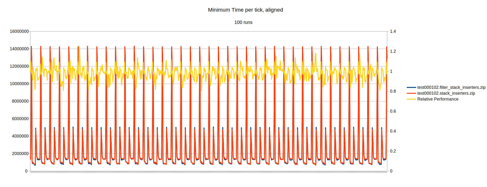

The difference is so tiny (and went the other direction on shorter tests) that it seems to be too close to call, use whichever inserter type you prefer.
Is there any performance difference between stack inserters and filter stack inserters statically set to whitelist one item?
The test consists of 10010 sets of infinity chest - stack inserter - infinity chest. The bottom infinity chests are set to create Iron Ore, the top ones are set to void everything. One map has stack inserters, the other has filter stack inserters with the filter set to whitelist Iron Ore.
Per tick data over 100 runs of each test was collected, and the minimum was sampled. The data was aligned between the two saves so the inserter periods would be synchronized in the graph.

The above graph also contains a filter stack inserters / stack inserters line for each tick of test time, showing difference in performance on those ticks.
All maps will be uploaded here.
Appears to be too close to call conclusively (0.4% difference); use whichever inserter type you want!
{kind=link}
{kind=link}